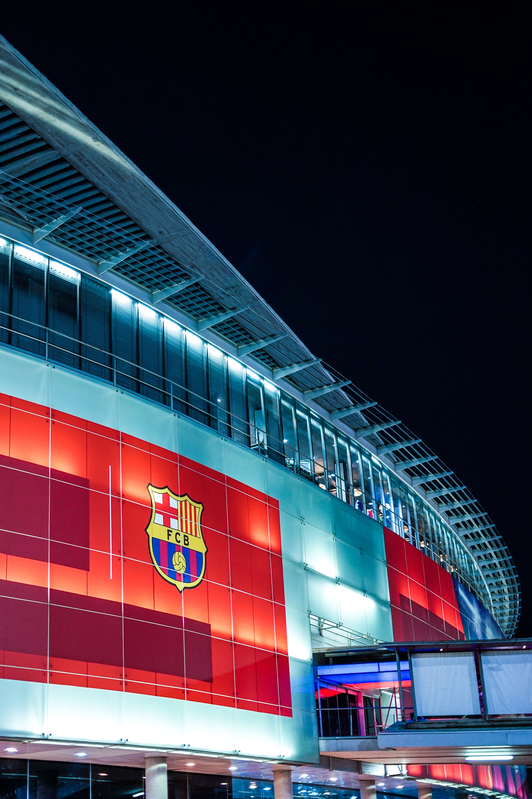
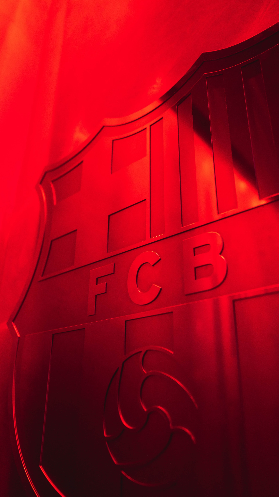

Barcelona (/ˌbɑːrsəˈloʊnə/ BAR-sə-LOH-nə, Catalan: [bəɾsəˈlonə], Spanish: [baɾθeˈlona]) is a city on the coast of northeastern Spain. It is the capital and largest city of the autonomous community of Catalonia, as well as the second most populous municipality of Spain. With a population of 1.6 million within city limits,[7] its urban area extends to numerous neighbouring municipalities within the Province of Barcelona and is home to around 4.8 million people,[3] making it the fifth most populous urban area in the European Union after Paris, the Ruhr area, Madrid, and Milan.[3] It is one of the largest metropolises on the Mediterranean Sea, located on the coast between the mouths of the rivers Llobregat and Besòs, and bounded to the west by the Serra de Collserola mountain range, the tallest peak of which is 512 metres (1,680 feet) high. Founded as a Roman city, in the Middle Ages Barcelona became the capital of the County of Barcelona. After joining with the Kingdom of Aragon to form the confederation of the Crown of Aragon, Barcelona, which continued to be the capital of the Principality of Catalonia, became the most important city in the Crown of Aragon and the main economic and administrative centre of the Crown, only to be overtaken by Valencia, wrested from Arab domination by the Catalans, shortly before the dynastic union between the Crown of Castile and the Crown of Aragon in 1492. Barcelona has a rich cultural heritage and is today an important cultural centre and a major tourist destination. Particularly renowned are the architectural works of Antoni Gaudí and Lluís Domènech i Montaner, which have been designated UNESCO World Heritage Sites. The city is home to two of the most prestigious universities in Spain: the University of Barcelona and Pompeu Fabra University. The headquarters of the Union for the Mediterranean are located in Barcelona. The city is known for hosting the 1992 Summer Olympics as well as world-class conferences and expositions and also many international sport tournaments. Barcelona is a major cultural, economic, and financial centre in southwestern Europe,[8] as well as the main biotech hub in Spain.[9] As a leading world city, Barcelona's influence in global socio-economic affairs qualifies it for global city status (Beta +).[10] Barcelona city center by oldypak lp photo Barcelona city center Barcelona is a transport hub, with the Port of Barcelona being one of Europe's principal seaports and busiest European passenger port,[11] an international airport, Barcelona–El Prat Airport, which handles over 50 million passengers per year,[12] an extensive motorway network, and a high-speed rail line with a link to France and the rest of EuropeThe name Barcelona comes from the ancient Iberian Baŕkeno, attested in an ancient coin inscription found on the right side of the coin in Iberian script as Barkeno in Levantine Iberian script,[14] in ancient Greek sources as Βαρκινών, Barkinṓn;[15][16] and in Latin as Barcino,[17] Barcilonum[18] and Barcenona.[19][20][21] Some older sources suggest that the city may have been named after the Carthaginian general Hamilcar Barca, who was supposed to have founded the city in the 3rd century BC,[22] but there is no evidence that Barcelona was ever a Carthaginian settlement, or that its name in antiquity, Barcino, had any connection with the Barcid family of Hamilcar.[23] During the Middle Ages, the city was variously known as Barchinona, Barçalona, Barchelonaa, and Barchenona. Internationally as well as domestically, Barcelona's name is abbreviated colloquially to 'Barça' in reference to the football club FC Barcelona, whose anthem is the Cant del Barça "Barça chant". A common abbreviated form used by locals for the city is Barna.  Another common abbreviation is 'BCN', which is also the IATA airport code of the Barcelona-El Prat Airport. The city is referred to as the Ciutat Comtal in Catalan and Ciudad Condal in Spanish (i.e., "Comital City" or "City of Counts"), owing to its past as the seat of the Count of Barcelona.